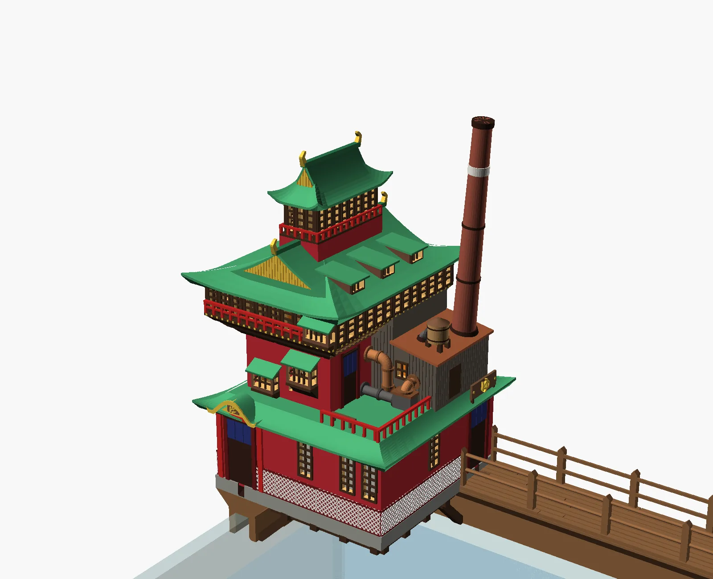
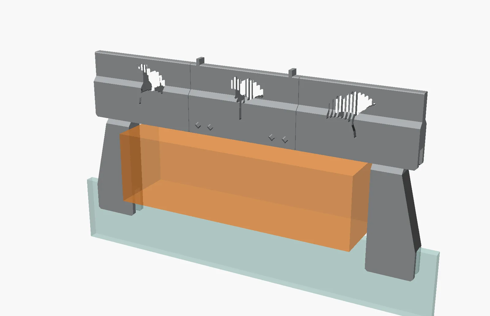
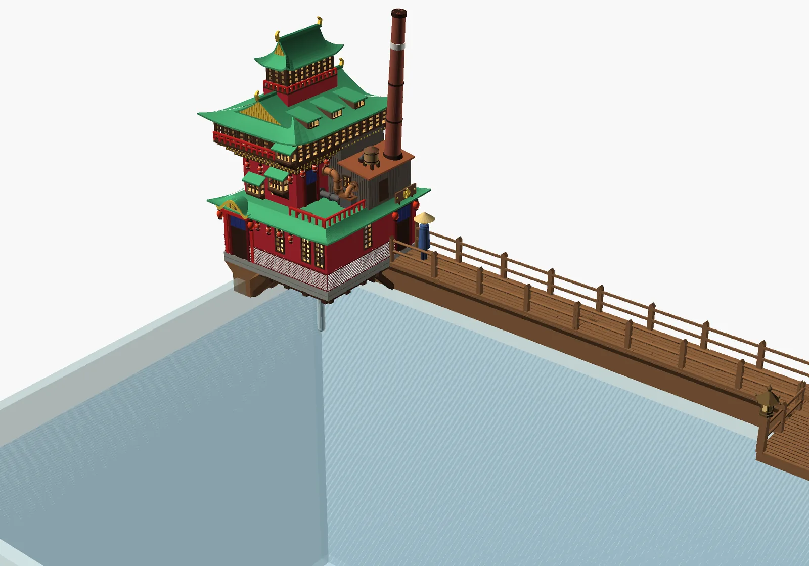
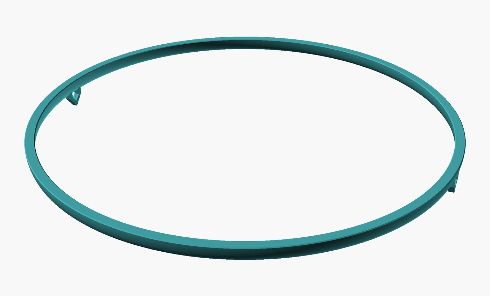

A 3D printer, an AI and a fish tank
Fun with Fishtanks
I wanted to see how well a 3D printer and an AI could work as a pair, so I gave them my fish tank. This is what the three of us made in two weeks: a riser for the light, a Japanese boardwalk for the back glass with a crooked bathhouse on its corner, and a floating ring for the plants.

Why this exists
The experiment
This whole thing is an exercise. I write software, and I wanted to know what an AI coding assistant could do once the result had to exist in the real world. A 3D printer is a good test for that, because a part either fits the glass or it doesn't.
It went like this. I said what I wanted in plain words. The AI wrote the part as code, checked that it could print without supports, sliced it and, when I said go, sent it to the printer over my home network. Then I held the result against the tank and told it what was wrong.
The tank is a 36-inch rimless one with 8 mm glass. The printer is a Bambu Lab A1 mini, which has a bed about 7 inches square, so anything longer than that comes apart into pieces that plug together.
- It's quick where I'm slowThe bathhouse went through thirteen versions in three days. Each one was a sentence or two from me and a fresh set of pictures back.
- It can't hold anythingIt has never seen my tank. We printed a little comb with eight slots just to learn how thick the glass is. A ring that looked fine on screen was far too chunky in the hand, and a cat that looked right on screen came off the plate under an inch tall.
- It makes confident mistakesOne file carried another printer's start-up moves and tried to drive the nozzle well past the edge of the bed. After a start-up fault, a quick retry sent the toolhead into the nozzle wiper. Both turned into rules it now follows.
- The taste is still mineThe first bathhouse was a perfectly good pagoda and I didn't like it. Most of what I typed was some form of too serious, fewer pipes, or thinner.
Three projects

Risers
The light needed to sit 5 inches higher. One end got a clamp-on riser with a bonsai cut through it. The other end has the filter pump in the way, so it got a gate.

Walkway
A 1:48 Japanese garden boardwalk along the back glass, with a fishing landing in the middle, a bathhouse where it reaches the corner, and a cat on the way.

Ring
A floating hoop that keeps the red root floaters in one patch. It took three tries to get it thin enough, and then it needed a chain.
26 October to 7 November 2026
How it went
- The first riser model, and a gauge with eight slots to measure the glass without calipers. The 8.4 mm slot fit best, and every clamp since has used it.
- A gauge file turned out to carry another printer's start-up moves, reaching far past the 7-inch bed. It was stopped in time. Since then every file gets all of its moves checked before it goes anywhere near the printer.
- The 5-inch bonsai riser printed in PETG. The pump end of the tank got a gate designed for it instead.
- The walkway began with a corner piece, because a corner seemed the most stable place to start. It printed overnight.
- A straight piece stopped during start-up with a Z-axis fault, and the hurried retry went badly. The rule since: find the cause before pressing go again.
- The centre landing printed, but its thin knee braces snapped off halfway through. Thicker ones fixed it. This is also the day I asked for the printer's start and finish tunes to go, and it has printed in silence ever since.
- Thirteen versions of the bathhouse, from a serious pagoda to a playful, crooked one, then cut into seven parts that print without supports.
- All four bathhouse plates printed: about 14¾ hours and 276 g of PETG.
- The floating ring, three times over. The first was too thick, the second never printed, and the third is thinner than a pencil and took 27 minutes. Then a chain for it, and a cat to hold the chain.
The rules we ended up with
None of these were there on day one. Each came out of something going wrong, or nearly.
- No supportsEvery part is shaped to print as it stands: undersides at 45 degrees, flat faces on the plate. Where one is truly needed it's a thin fin that snaps off.
- Plug together, no gluePegs, bow-tie keys and tongue-and-groove joints, so pieces come apart again for painting.
- Fit test firstA small test print before trusting any press fit on a big part. Twenty minutes of test saves five hours of print.
- Check every moveEach file's moves are followed, start to finish, against what the A1 mini can reach before it's sent.
- Nothing starts without a goThe AI can upload a file and start it, but only after I've said go for that exact file.
- A silent printerThe start and finish tunes are taken out of every file, and each new file is checked for them.
Still to come
The last pieces of the boardwalk. A cat fisherman for the landing: the first one printed under an inch tall, so the next is nearly three times the size. A set of stairs to carry the walk up and over the filter. And photos of all of it on the real tank.
How the files get made, checked and sent to the printer is on How it's made.